Elektronika · IT Support · Embedded System
Halo, saya Mundir Muhtadi.
Electronics & IT Support Technician
Lulusan D4 Teknologi Rekayasa Elektronika dengan pengalaman dalam troubleshooting hardware dan software, maintenance perangkat elektronik, embedded system, IoT, serta otomasi industri.
Kesiapan kerjaLapangan & mobile service
FokusElektronika & IT Support
Pengalaman2021–2026
LokasiSitubondo, Indonesia
PendidikanD4 Teknologi Rekayasa Elektronika
01 / Tentang
Memecahkan masalah teknis dari perangkat hingga sistem.
Lulusan D4 Teknologi Rekayasa Elektronika Universitas Jember dengan pengalaman dalam troubleshooting hardware dan software komputer, instalasi Windows dan driver, upgrade perangkat laptop/PC, serta maintenance perangkat elektronik.
Terbiasa melakukan diagnosis kerusakan dan memberikan solusi teknis kepada pengguna. Memiliki kemampuan tambahan di bidang elektronika, embedded system, IoT, dan otomasi industri, serta mampu bekerja secara individu maupun tim.
LokasiSitubondo, Indonesia
SpesialisasiHardware, software & elektronika
PendidikanUniversitas Jember · 2021–2025
KesiapanLapangan & mobile service
02 / Keahlian
Perangkat, pemrograman, dan tools teknis.
Keahlian yang digunakan untuk mendiagnosis masalah, merakit sistem, dan mengembangkan solusi elektronika.
Embedded & Programming
Industrial & Technical
Engineering Tools
03 / Highlights
Prestasi dan sertifikasi.
Rekam akademik dan sertifikasi yang mendukung perjalanan saya di bidang programming dan elektronika.
Pencapaian akademik
- Juara 1 Tugas Akhir Terbaik Bidang Programming – PRODISTIK ITS (2021)
- Wisudawan Terbaik Ke-3 Bidang Programming dengan IPK 3.70 – PRODISTIK ITS (2021)
Bidang yang dipelajari
- Asisten Peneliti pada empat program penelitian Universitas Jember
- Asisten Penelitian di Laboratorium Elektronika Terapan (2023–2025)
- Juara 1 Kompetisi Rekacipta Ilmiah 2025 – The Innovator of Generation
- Panitia Jember Robotic Competition 2024
04 / Certificates
Bukti sertifikat dan penghargaan.
Dokumen sertifikat, penghargaan, dan kegiatan yang dapat dibuka atau diunduh untuk melihat bukti selengkapnya.
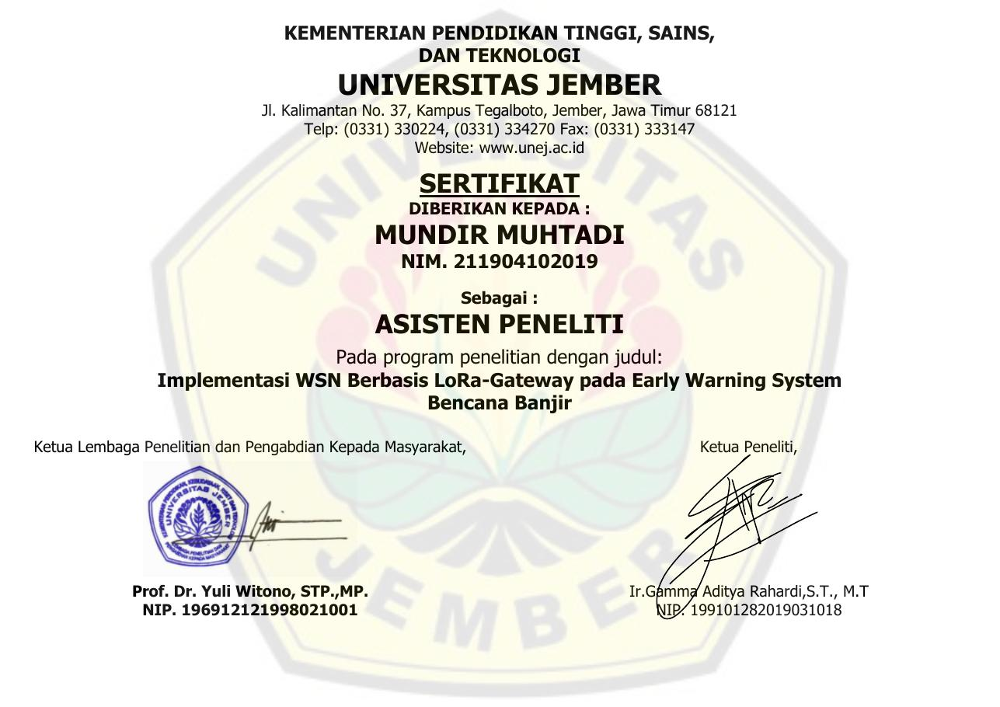
Lihat PDF ↗Sertifikat · Asisten Peneliti
Implementasi WSN Berbasis LoRa-Gateway pada Early Warning System Bencana Banjir
Universitas Jember
Download sertifikat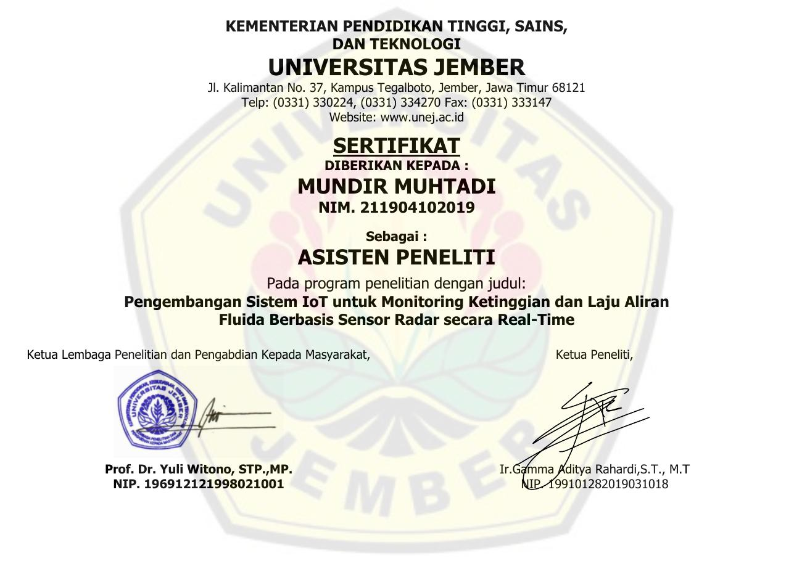
Lihat PDF ↗Sertifikat · Asisten Peneliti
Pengembangan Sistem IoT untuk Monitoring Ketinggian dan Laju Aliran Fluida Berbasis Sensor Radar secara Real-Time
Universitas Jember
Download sertifikat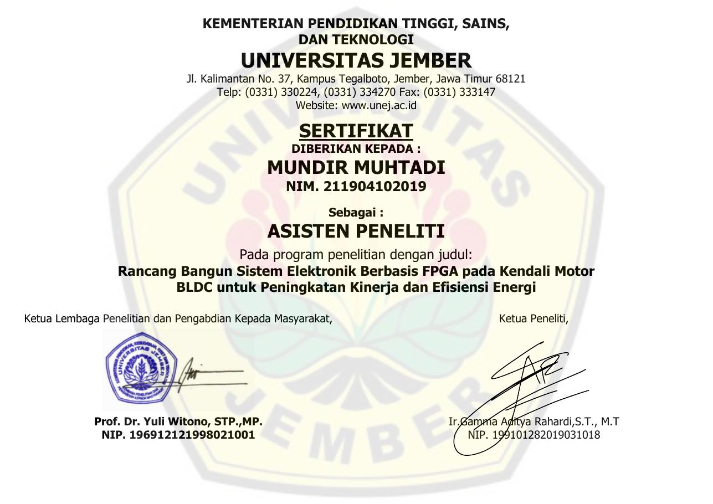
Lihat PDF ↗Sertifikat · Asisten Peneliti
Rancang Bangun Sistem Elektronik Berbasis FPGA pada Kendali Motor BLDC untuk Peningkatan Kinerja dan Efisiensi Energi
Universitas Jember
Download sertifikat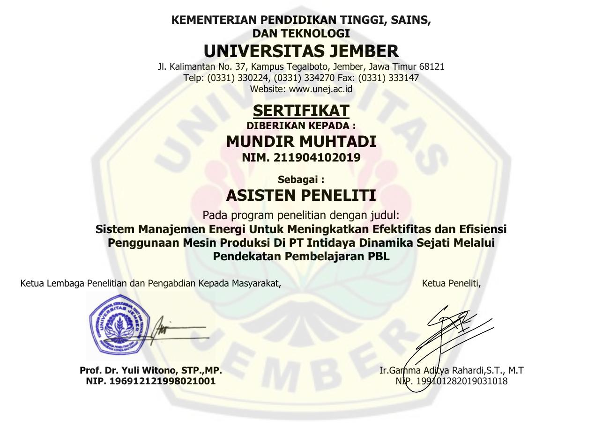
Lihat PDF ↗Sertifikat · Asisten Peneliti
Sistem Manajemen Energi Untuk Meningkatkan Efektifitas dan Efisiensi Penggunaan Mesin Produksi Di PT Intidaya Dinamika Sejati Melalui Pendekatan Pembelajaran PBL
Universitas Jember
Download sertifikat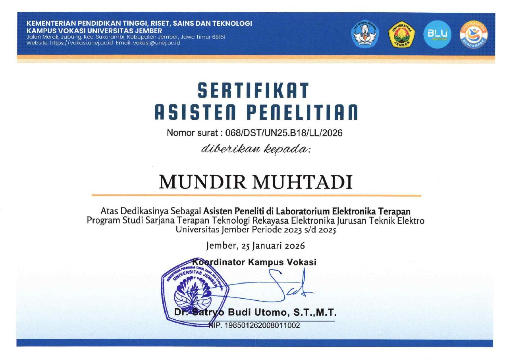
Lihat PDF ↗Sertifikat · Laboratorium
Asisten Penelitian di Laboratorium Elektronika Terapan
Universitas Jember · Periode 2023–2025
Download sertifikat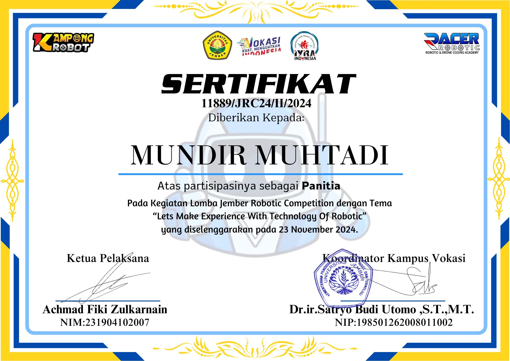
Lihat gambar ↗Sertifikat · Kepanitiaan
Panitia Jember Robotic Competition 2024
Kegiatan Lomba Jember Robotic Competition · 23 November 2024
Download sertifikat{kind=link}
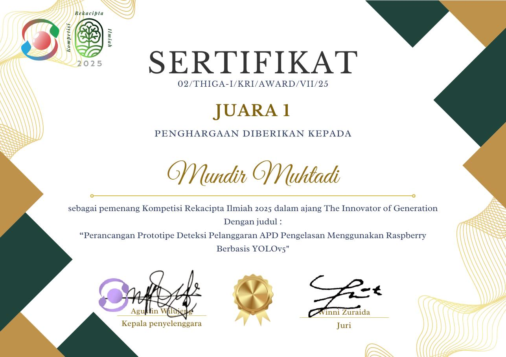
Lihat PDF ↗Penghargaan · Juara 1
Perancangan Prototipe Deteksi Pelanggaran APD Pengelasan Menggunakan Raspberry Berbasis YOLOv5
Kompetisi Rekacipta Ilmiah 2025 · The Innovator of Generation
Download sertifikat05 / Pengalaman
Pengalaman profesional.
Peran dan tanggung jawab yang membentuk pengalaman saya di service elektronik dan sistem kelistrikan industri.
Jan 2021 — Mei 2026
MD Service Elektronik
Teknisi Service Elektronik
Menangani perbaikan perangkat, diagnosis kerusakan, serta konsultasi teknis kepada pelanggan.
- Melakukan perbaikan HP, laptop, dan perangkat elektronik.
- Menangani troubleshooting hardware dan software.
- Melakukan instalasi ulang sistem operasi dan driver.
- Melakukan upgrade perangkat seperti RAM dan SSD.
- Memberikan konsultasi dan diagnosa kerusakan kepada pelanggan.
Agu 2022 — Nov 2022
PT Intidaya Dinamika Sejati
Magang
Mendukung perakitan, pengujian, dan troubleshooting panel listrik serta sistem kontrol.
- Merakit panel listrik sesuai standar industri.
- Membantu instalasi dan pengkabelan sistem kontrol.
- Melakukan pengecekan dan pengujian komponen panel.
- Mendukung proses troubleshooting dan maintenance sistem kelistrikan industri.
Pendidikan
D4 Teknologi Rekayasa Elektronika
Universitas Jember · 2021–2025
MAN Negeri 2 Situbondo
2018–2021
MTs Negeri 1 Situbondo
2015–2018
MiNu 01 Al-Khairiyah
2008–2014
06 / Project Pilihan
Sistem yang pernah saya kembangkan.
Project pilihan yang menunjukkan minat dan pengalaman saya dalam IoT, FPGA, manajemen energi, dan keselamatan kerja.
01LoRa · IoT
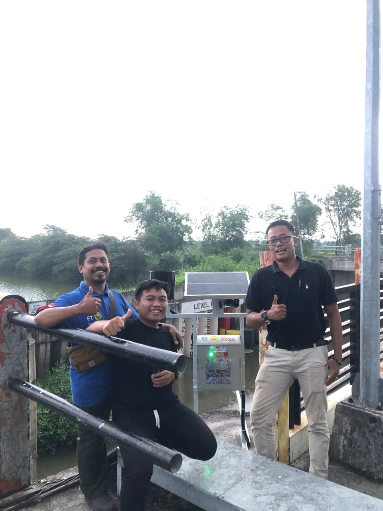
01 / IoT SystemMar 2024 – Jun 2024
Implementasi WSN Berbasis LoRa-Gateway pada Early Warning System Bencana Banjir
Mengembangkan Wireless Sensor Network (WSN) menggunakan komunikasi LoRa-Gateway untuk sistem peringatan dini dan monitoring bencana banjir.
Lingkup proyek
Pengembangan jaringan sensor nirkabel dan implementasi sistem peringatan dini untuk monitoring bencana banjir.
02RADAR · IoT
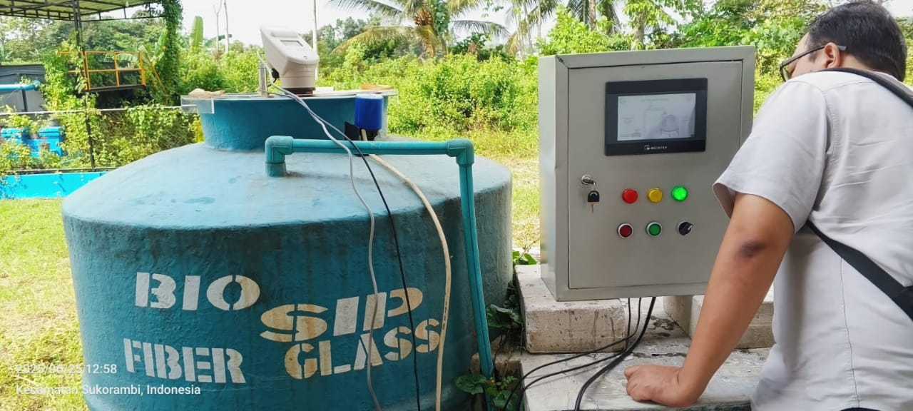
02 / IoT SystemAsisten Peneliti
Pengembangan Sistem IoT untuk Monitoring Ketinggian dan Laju Aliran Fluida Berbasis Sensor Radar secara Real-Time
Mengembangkan sistem IoT untuk monitoring ketinggian dan laju aliran fluida menggunakan sensor radar secara real-time.
Lingkup proyek
Pengembangan dan penerapan sistem monitoring ketinggian serta laju aliran fluida berbasis sensor radar.
03FPGA · BLDC
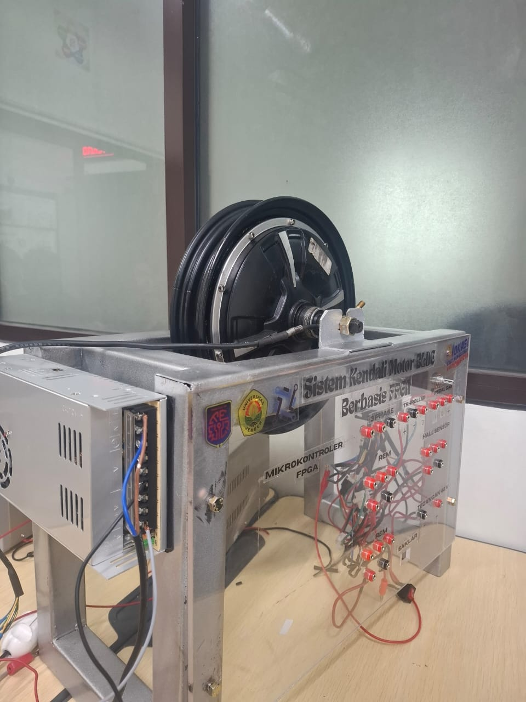
03 / Control SystemSep 2024 – Des 2024
Rancang Bangun Sistem Elektronik Berbasis FPGA pada Kendali Motor BLDC untuk Peningkatan Kinerja dan Efisiensi Energi
Merancang sistem kendali elektronik berbasis FPGA untuk motor BLDC, kemudian melakukan pengujian dan optimasi agar sistem bekerja stabil.
Lingkup proyek
Perancangan, pengujian, dan optimasi sistem kendali elektronik berbasis FPGA untuk motor BLDC.
04ENERGY SYSTEM
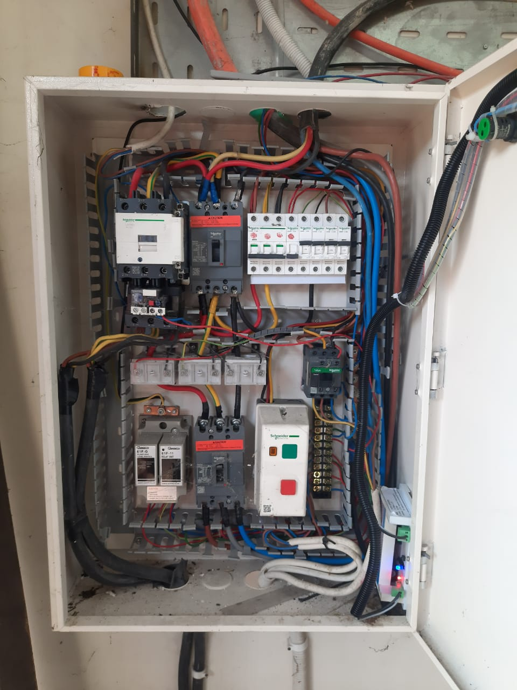
04 / EnergySep 2024 – Des 2024
Sistem Manajemen Energi Untuk Meningkatkan Efektifitas dan Efisiensi Penggunaan Mesin Produksi Di PT Intidaya Dinamika Sejati Melalui Pendekatan Pembelajaran PBL
Mengembangkan sistem manajemen energi untuk mesin produksi dan membantu monitoring konsumsi energi mesin produksi.
Lingkup proyek
Pengembangan sistem dan dukungan monitoring konsumsi energi pada mesin produksi.
05YOLOv5 · APD
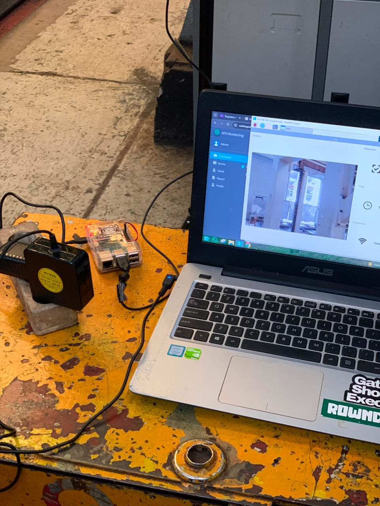
05 / Computer VisionFeb 2025 – Mei 2025
Perancangan Prototipe Deteksi Pelanggaran APD Pengelasan Menggunakan Raspberry Berbasis YOLOv5
Mengembangkan sistem deteksi APD berbasis Raspberry Pi dan YOLOv5 untuk monitoring keselamatan pengelasan.
Lingkup proyek
Implementasi YOLOv5 pada Raspberry Pi untuk membantu monitoring keselamatan pengelasan melalui deteksi penggunaan APD.
07 / Documentation
Dokumentasi proses dan pengerjaan.
Foto lapangan yang menunjukkan proses pengembangan, perakitan, pengujian, dan penerapan sistem.
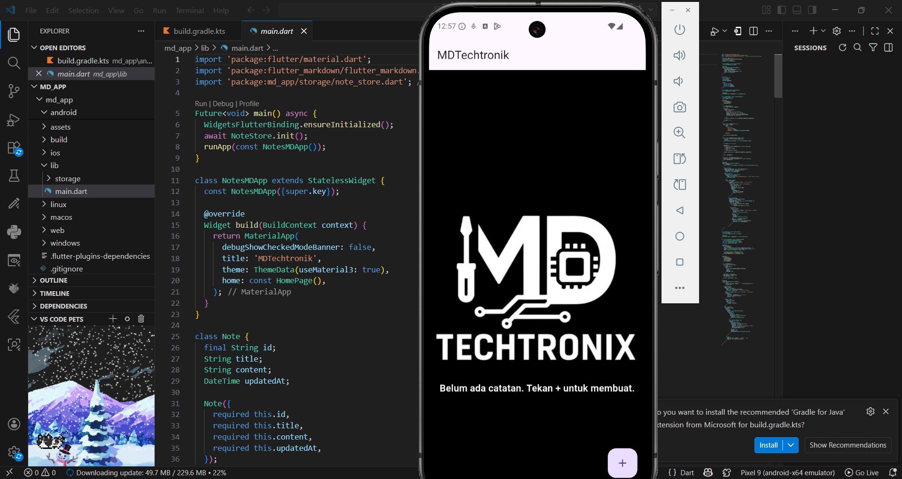
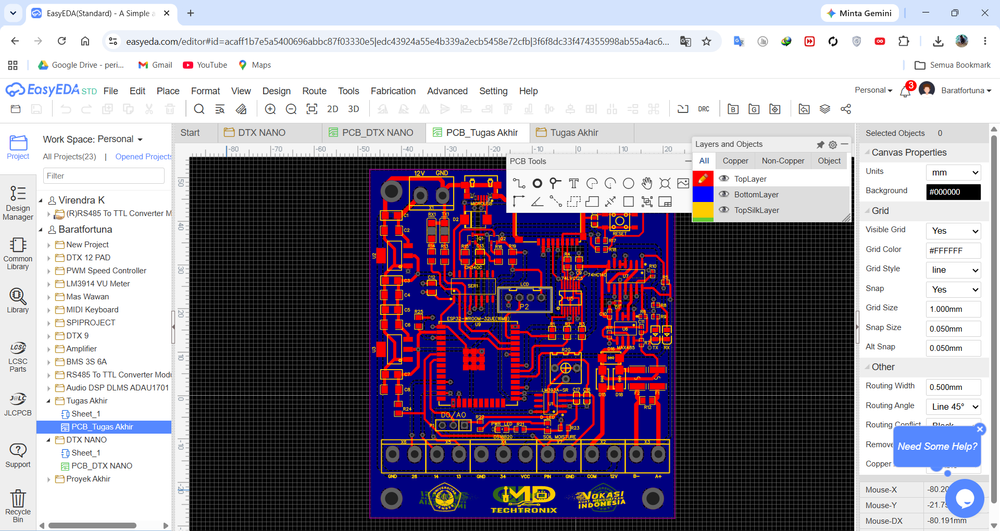
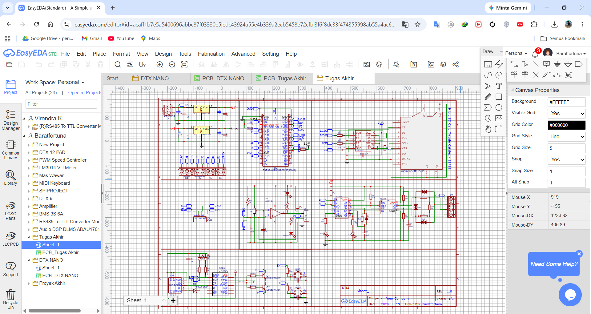
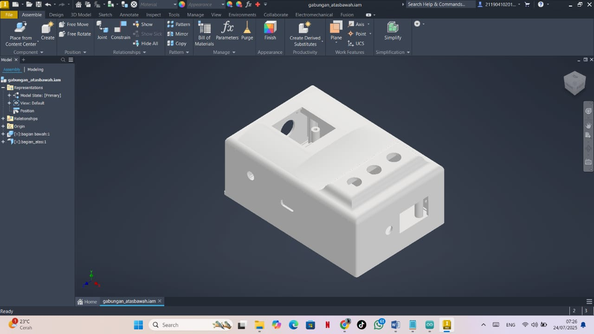
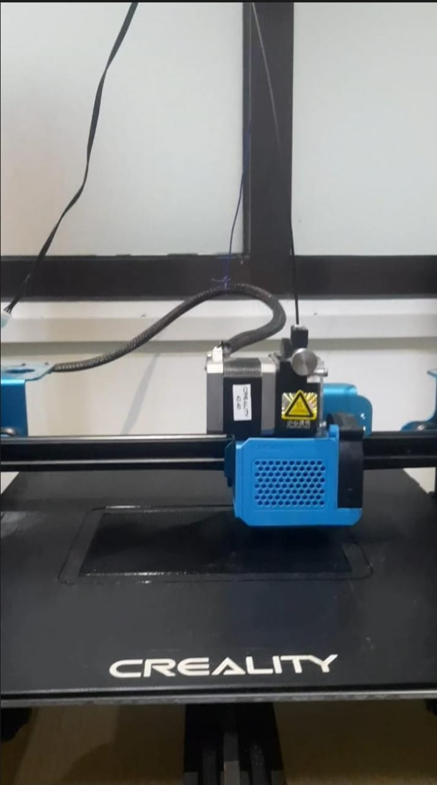
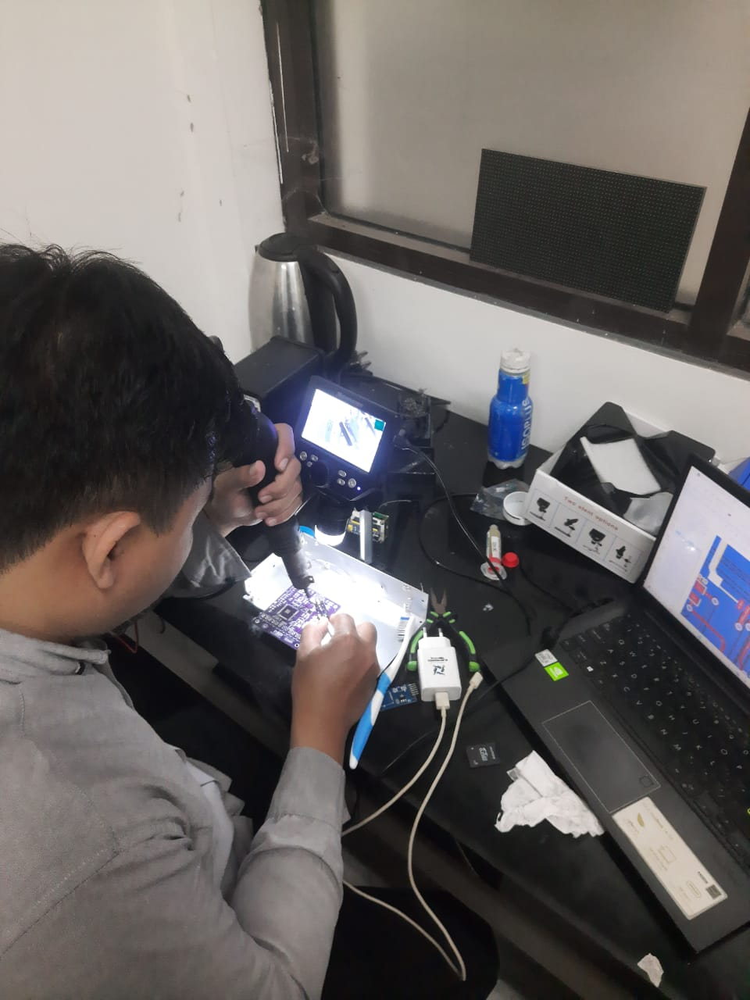
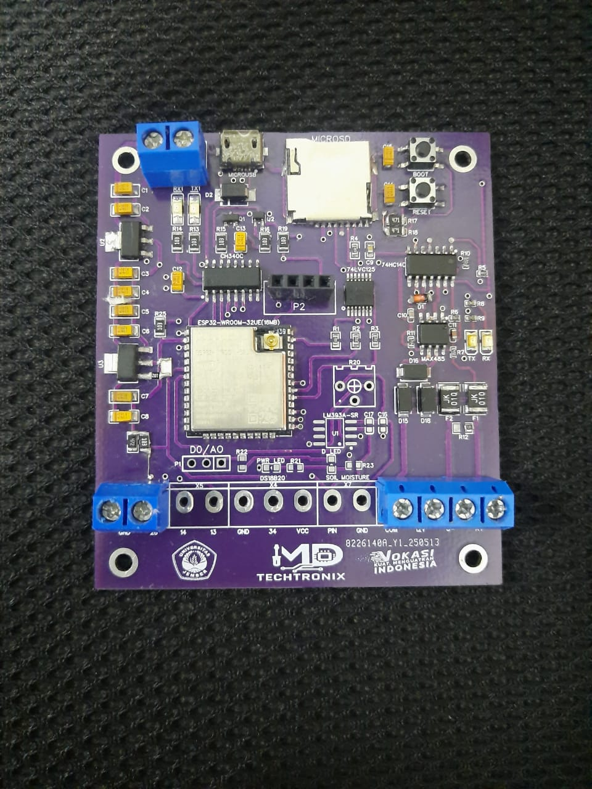
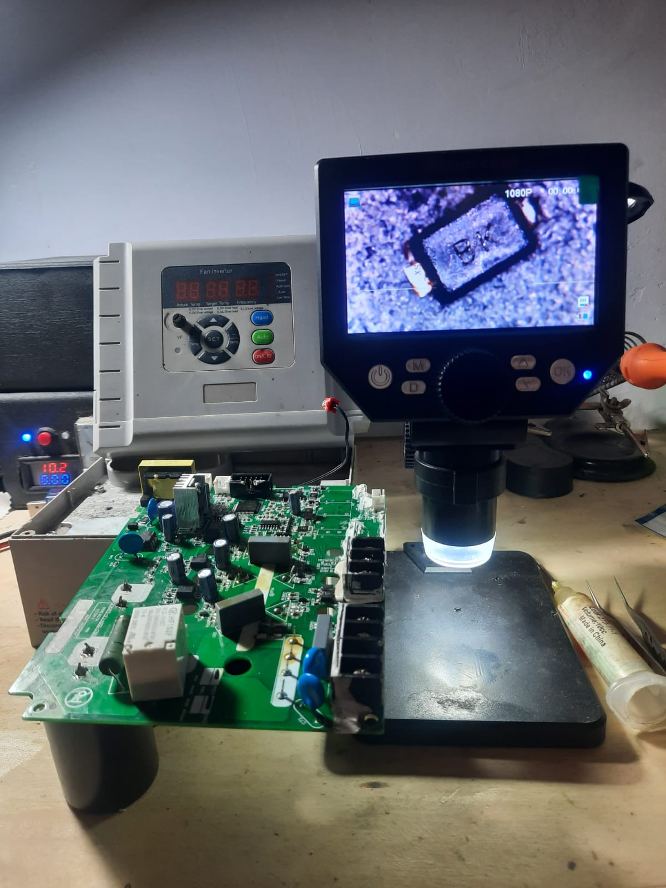
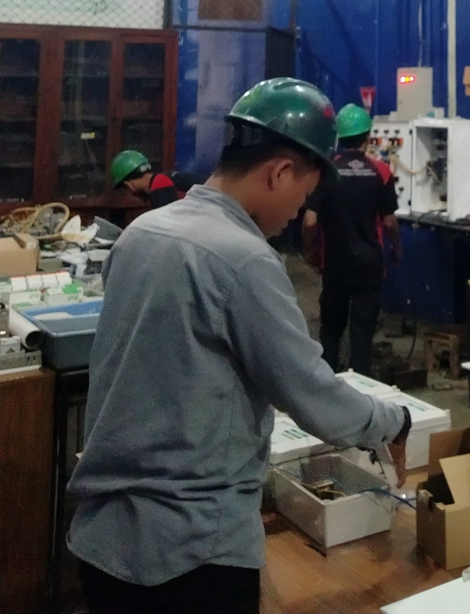
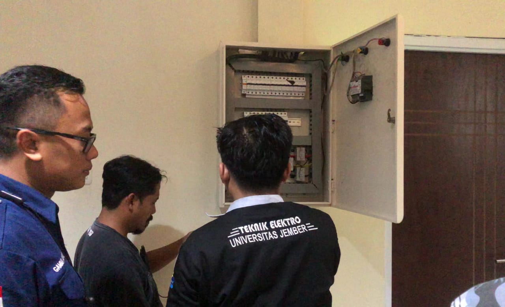
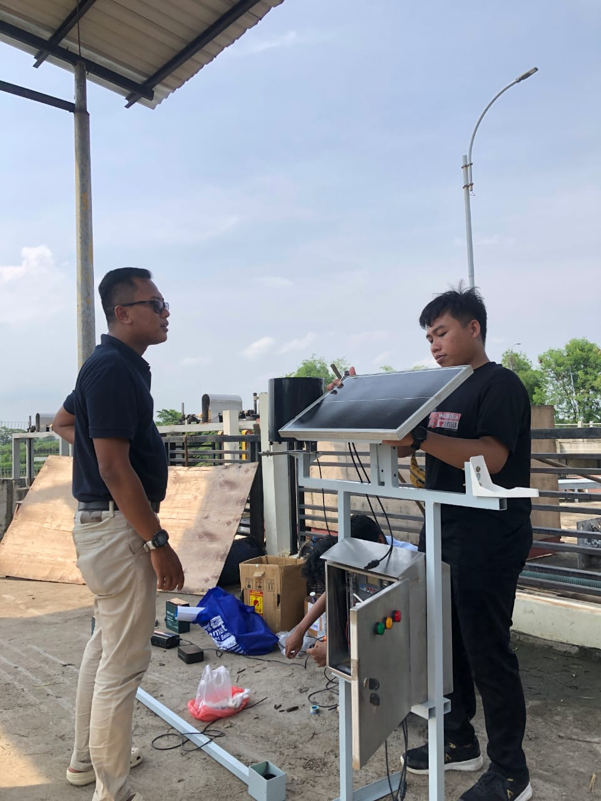
08 / Kontak
Mari berdiskusi tentang solusi teknis.
Tertarik bekerja sama atau memiliki peluang yang relevan di bidang elektronika, IT support, atau sistem kontrol? Saya terbuka untuk berdiskusi.
Kirim EmailLokasiSitubondo, Indonesia